1과목: 산업안전보건법령
1. 산업안전보건법령상 지도사의 위반행위에 대해서 지도사 등록을 필수적으로 취소하여야 하는 경우를 모두 고른 것은?
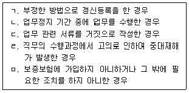
2. 산업안전보건법령상 근로감독관 등에 관한 설명으로 옳지 않은 것은?
3. 산업안전보건법령상 1년 이하의 징역 또는 1천만원 이하의 벌금에 처해질 수 있는 자는?
4. 산업안전보건법령상 휴게실 설치·관리기준 준수대상 사업장에 관한 규정의 일부이다. [ ]에 들어갈 숫자를 옳게 나열한 것은?
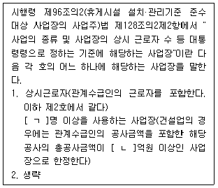
5. 산업안전보건법령상 1일 6시간을 초과하여 근무할 수 없는 작업은?
6. 산업안전보건법령상 작업환경측정기관으로 지정 받을 수 있는 자에 해당하지 않는 것은?
7. 산업안전보건법령상 유해인자의 유해성 위험성 분류기준 중 물리적 인자의 분류기준으로 옳지 않은 것은?
8. 산업안전보건법령상 제조 등이 금지되는 유해물질로서 대체물질이 개발되지 아니하여 고용노동부장관의 허가를 받아서 제조·사용할 수 있는 '허가 대상 유해물질'에 해당하는 것은? (단, 제시된 내용 외의 다른 상황은 고려 하지 않음)
9. 산업안전보건법령상 자율안전확인대상기계등에 해당하는 것을 모두 고른 것은?
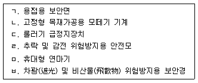
10. 산업안전보건법령상 보건관리자에 대한 직무교육에 관한 내용이다. ( )에 들어갈 내용을 순서대로 옳게 나열한 것은? (단, 직무교육을 면제받는 경우는 고려하지 않음)
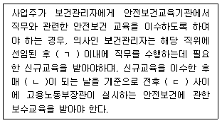
11. 산업안전보건법령상 기계등을 대여받은 자가 그 설치·해체 작업이 이루어지는 동안 작업과정 전반(全般)을 영상으로 기록하여 대여기간 동안 보관하여야하는 기계등에 해당하는 것은?
12. 산업안전보건법령상 안전검사대상기계등에 대해 안전검사를 면제할 수 있는 경우가 아닌 것은?
13. 산업안전보건법령상 일반건강진단을 실시한 것으로 보는 건강진단에 해당 하지 않는 것은?
14. 산업안전보건법령상 유해하거나 위험한 기계·기구에 대한 방호조치 등에 관한 설명으로 옳은 것을 모두 고른 것은?
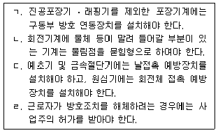
15. 산업안전보건법 시행규칙의 일부이다. ( )에 들어갈 숫자로 옳은 것은?
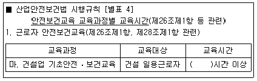
16. 산업안전보건법령상 주요 구조 부분을 변경하는 경우 안전인증을 받아야 하는 기계 및 설비에 해당하지 않는 것은? (단, 안전인증을 면제받는 경우는 고려하지 않음)
17. 산업안전보건법령상 용어의 정의로 옳은 것은?
18. 산업안전보건법령상 관계수급인 근로자가 도급인의 사업장에서 작업을 하는 경우 도급인이 이행해야 하는 사항에 해당하는 것을 모두 고른 것은?
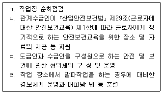
19. 산업안전보건법령상 안전관리자 및 보건관리자 등에 관한 설명으로 옳지 않은 것은?
20. 산업안전보건법령상 안전보건관리책임자에 관한 설명으로 옳지 않은 것은?
21. 산업안전보건법령상 안전보건표지에 관한 설명으로 옳은 것은?
22. 산업안전보건법령상 근로자의 안전 및 보건에 유해하거나 위험한 작업으로서 사업주가 이를 도급하여 자신의 사업장에서 수급인의 근로자가 그 작업을 하도록 해서는 아니되는 작업을 모두 고른 것은? (단, 제시된 내용 외의 다른 상황은 고려하지 않음)
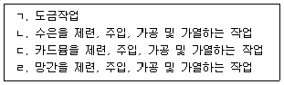
23. 산업안전보건법령상 산업재해 발생에 관한 설명으로 옳지 않은 것은?
24. 산업안전보건법령상 상시근로자 수가 200명인 경우에 안전보건관리규정을 작성해야하는 사업의 종류에 해당하는 것은?
25. 산업안전보건법령상 산업안전보건위원회에 관한 내용으로 옳지 않은 것은?
2과목: 산업안전일반
26. 사업장 위험성평가에 관한 지침에 따라 위험성평가 실시규정을 작성할 때 반드시 포함되어야 할 사항이 아닌 것은?
27. A부품의 고장확률 밀도함수는 지수분포를 따르며, 평균수명은 104시간이다. 이 부품을 103시간 작동시켰을 때의 신뢰도는 얼마인가? (단, 소수점 셋째 자리에서 반올림하여 소수점 둘째자리까지 구한다.)
28. 신뢰도가 A인 동일한 부품 3개를 그림과 같이 직렬 및 병렬로 연결하였을 때 전체시스템의 신뢰도는 0.8309이다. 이 부품의 신뢰도 A는 얼마인가?
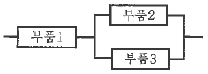
29. 정성적, 귀납적인 시스템안전 분석기법으로 시스템에 영향을 미치는 모든 요소의 고장을 형태별로 분석하여 그 영향을 검토하는 기법은?
30. 정상 청력을 가진 성인이 느끼는 소리의 크기를 비교할 때, 1,000Hz 순음에서 80dB의 소리는 60dB의 소리에 비해 얼마나 더 크게 들리는가?
31. 산업안전보건법령상 유해위험방지계획서 제출 대상인 공사를 모두 고른 것은?
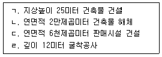
32. 서로 독립인 기본사상 a, b, c로 구성된 아래의 결함수(Fault Tree)에서 정상사상 T에 관한 최소절단집합(minimal cut set)을 모두 구하면?
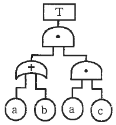
33. 근골격계질환 예방을 위한 유해요인 평가방법에 관한 설명으로 옳은 것은?
34. 제품 설계에 인체 측정치를 적용하는 절차를 순서대로 옳게 나열한 것은?
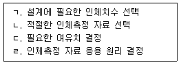
35. 산업안전보건기준에 관한 규칙상 근골격계부담작업으로 인한 건강장해 예방과 관련된 내용으로 옳지 않은 것은(오류 신고가 접수된 문제입니다. 반드시 정답과 해설을 확인하시기 바랍니다.)
36. 산업안전보건기준에 관한 규칙상 소음 및 진동에 의한 건강장해의 예방에 관한 내용으로 옳지 않은 것은?
37. 인간의 시각 기능에 관한 설명으로 옳지 않은 것은?
38. 재해 발생 시 조치사항으로 옳지 않은 것은?
39. 인간-기계 시스템에 관한 설명으로 옳은 것은?
40. 재해 통계에 관한 내용으로 옳은 것은?
41. 제조물 책임법상 결함에 해당되는 것을 모두 고른 것은?
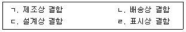
42. 재해조사의 1단계(사실 확인)에 포함되는 활동을 모두 고른 것은?
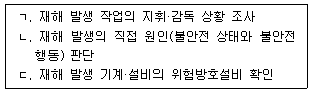
43. 다음에서 설명하고 있는 안전관리의 생산성 측면 효과로 옳지 않은 것은?
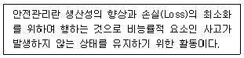
44. 안전교육의 지도원칙으로 옳지 않은 것은?
45. 안전보건교육규정에서 정하고 있는 "직무교육의 방법"의 일부 내용이다. ( )에 들어갈 것으로 옳은 것은?
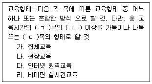
46. 버드(F. Bird)의 재해 구성비율에 해당하는 것은?
47. 산업안전보건법령상 안전보건관리담당자의 업무가 아닌 것은?
48. 안전보건교육 방법에서 하버드학파의 5단계 교수법을 순서대로 옳게 나열 한 것은?
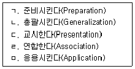
49. 산업안전보건법령상 안전보건개선계획서에 관한 내용으로 옳지 않은 것은?
50. 안전보건교육규정에서 정의하는 교육에 관한 내용으로 옳지 않은 것은?
3과목: 기업진단ㆍ지도
51. 포름알데히드에 관한 설명으로 옳은 것을 모두 고른 것은? (문제 오류로 실제 시험에서는 모두 정답처리 되었습니다. 여기서는 1번을 누르면 정답 처리 됩니다.)
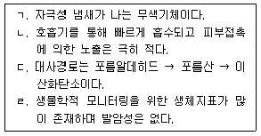
52. 산업안전보건법령상 근로자 건강진단의 종류가 아닌 것은?
53. 다음 설명에 해당하는 중금속은?
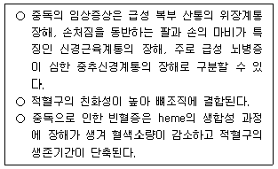
54. 작업환경측정 및 정도관리 등에 관한 고시에서 정하는 시료채취에 관한 설명으로 옳은 것은?
55. 작업환경측정 및 정도관리 등에 관한 고시에서 정하는 용어의 정의로 옳지 않은 것은?
56. 산업안전보건기준에 관한 규칙에서 정하고 있는 특별관리물질이 아닌 것은?
57. 화학물질 및 물리적 인자의 노출기준에서 노출기준 사용상의 유의사항으로 옳지 않은 것은?
58. 신체와 환경의 열교환 종류에 관한 설명으로 옳지 않은 것은?
59. 스웨인(Swain)이 분류한 휴먼에러 유형에 해당하는 것을 모두 고른 것은?
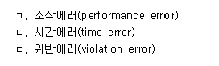
60. 인간의 뇌파에 관한 설명으로 옳지 않은 것은?
61. 면적에 관련한 착시현상으로 옳은 것은?
62. 라스뮈센(Rasmussen)의 인간행동 분류에 관한 설명으로 옳은 것을 모두 고른 것은?
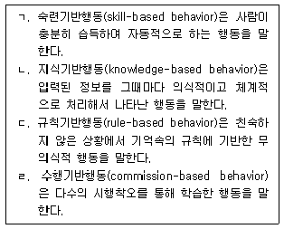
63. 산업심리학의 연구방법에 관한 설명으로 옳은 것은?
64. 내적(intrinsic) 동기와 외적(extrinsic) 동기의 특징과 관계를 체계적으로 다루는 동기이론으로 옳은 것은?
65. 집단 또는 팀(team)에 관한 설명으로 옳지 않은 것은?
66. 유용성이 높은 인사 선발 도구에 관한 설명으로 옳지 않은 것은? (문제 오류로 실제 시험에서는 3, 4번이 정답처리 되었습니다. 여기서는 3번을 누르면 정답 처리 됩니다.)
67. 도요타 생산방식의 주축을 이루는 JIT(Just In Time) 시스템의 장점에 해당되지 않는 것은?
68. 총괄생산계획 기법 중 휴리스틱 계획기법에 해당하지 않는 것은?
69. 다음은 신 QC 7가지 도구 중 무엇에 관한 설명인가?
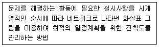
70. 조직설계에 영향을 미치는 기술유형을 학자들이 제시한 것이다. ( )에 들어갈 내용으로 옳은 것은?
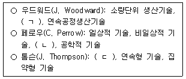
71. 수요예측 방법 중 주관적(정성적) 접근방법에 해당하지 않는 것은?
72. 직무평가에 관한 설명으로 옳은 것을 모두 고른 것은?
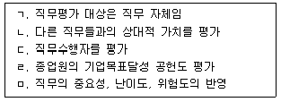
73. 노동쟁의 조정에 관한 설명으로 옳지 않은 것은?
74. 테일러(F. Taylor)의 과학적 관리법(scientific management)에 관한 설명으로 옳은 것을 모두 고른 것은?
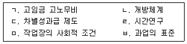
75. 조직에서 생산적 행동(Productive behavior)과 반생산적 행동 (Counterproductive work behavior: CWB)에 관한 설명으로 옳지 않은 것은?